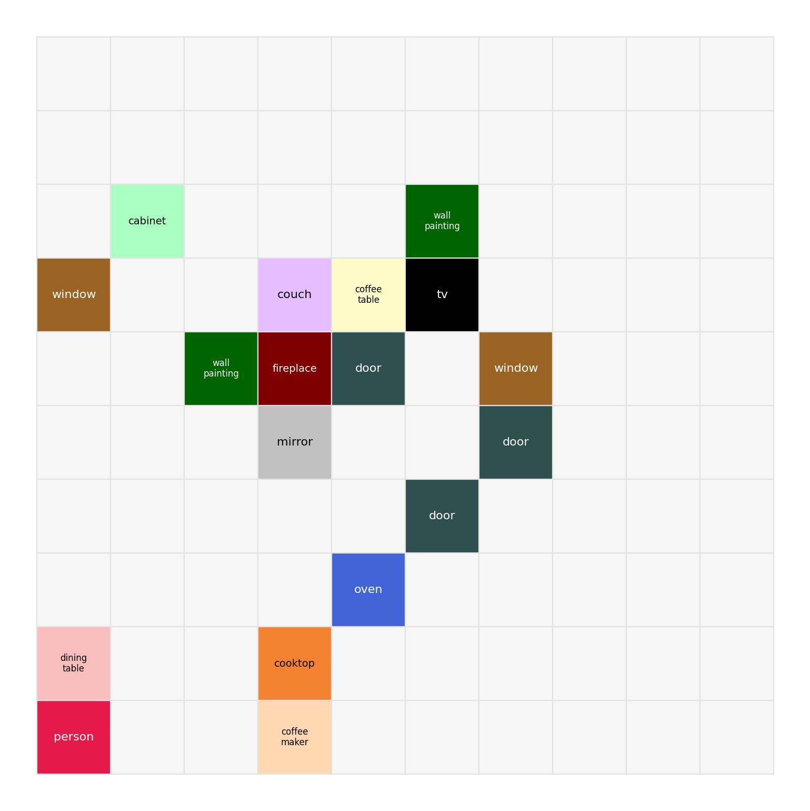
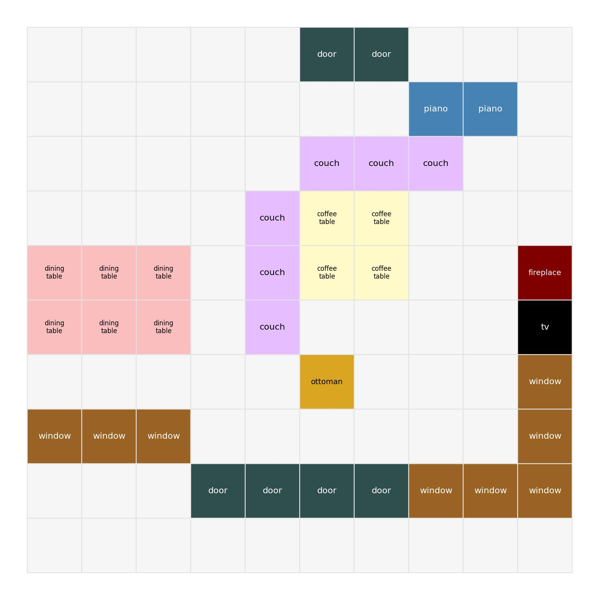
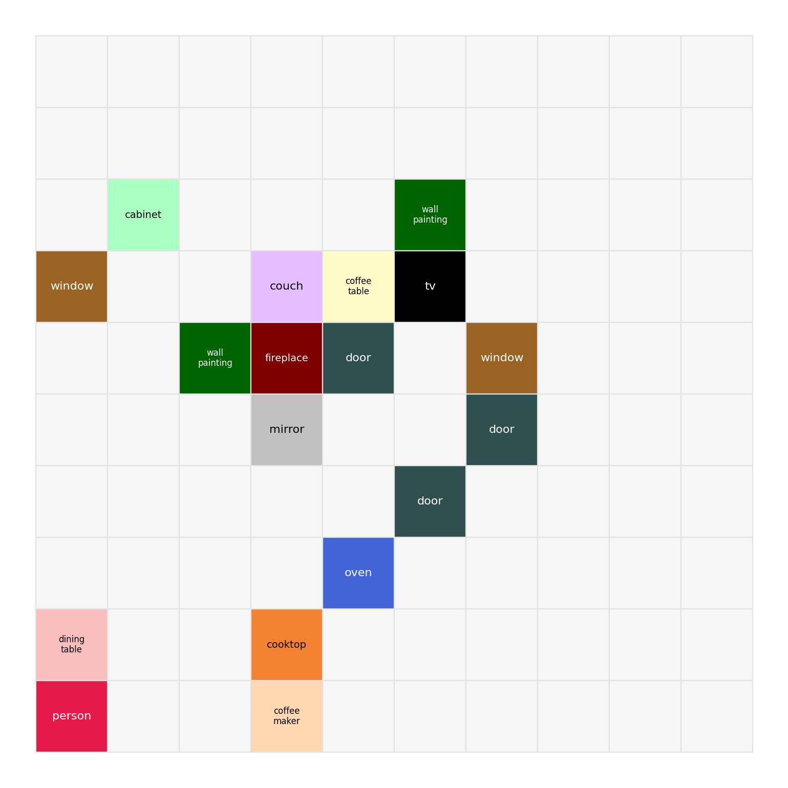
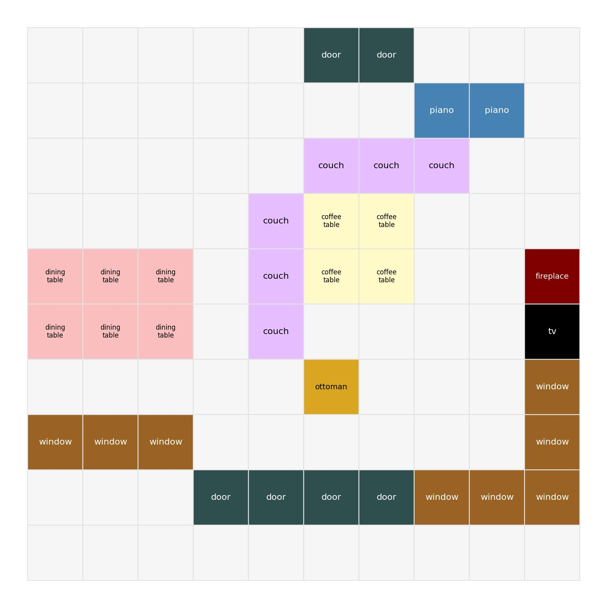

University of Tübingen
Advisor: Prof. Hilde Kuehne
Sight & Sound Project
Fine-grained audio-visual alignment via temporal sequences instead of global representations.
Audio-Visual Reasoning Transfer, generates high-quality AV reasoning traces from single-modality teachers.
Fine-tunes Qwen2.5-Omni with GRPO, achieving SOTA on the MMAU benchmark.
Test-time adaptation for videos using RL and a multi-armed bandit-based frame selection.

Jia et al. — "Thinking in Space" (CVPR 2025) · VSI-Bench

| Condition | Rel. Dist | Δ |
|---|---|---|
| Baseline | 46.0% | — |
| + Predicted map | 56.0% | +10% |
| + GT map | 66.0% | +20% |
CoT, Self-Consistency, and Tree-of-Thoughts all hurt spatial reasoning. Linguistic reasoning doesn't transfer to spatial tasks.
We collected top-down cognitive maps for a subset of SAVVY-Bench videos and provided them alongside the video input to Qwen3-Omni.
 



JSON structure (Based on the paper)
Providing cognitive maps as additional input led to a loss in performance on every task.
no gain As image: top-down grid rendered as an image alongside video input
no gain As JSON: structured object positions as key-value pairs in the prompt
no gain As text grid: ASCII-based task grid layout in the prompt. (Needs a dictionary)
Dynamic scenes: SAVVY-Bench has moving cameras and sound sources. A static map may not capture the temporal dynamics needed.
Wrong formatting: We think the JSON format was not properly structured for the model to interpret, although it works for the authors. Feeding the maps as images is too "OOD" for Qwen, based on our initial experiments.